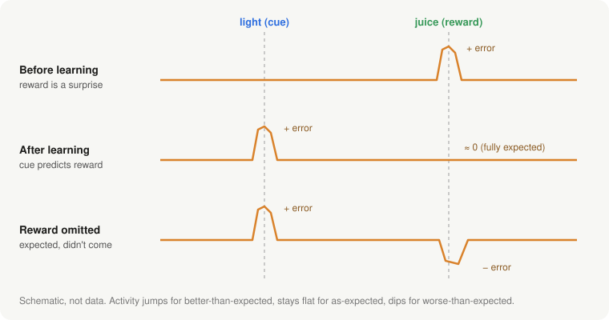
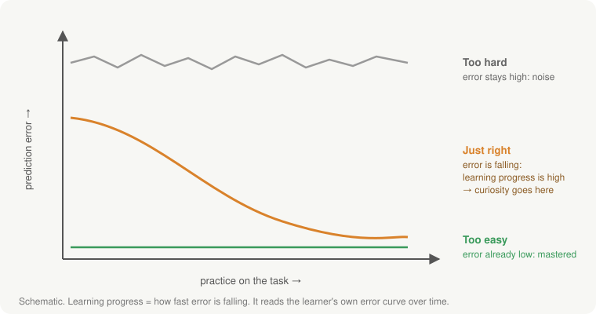
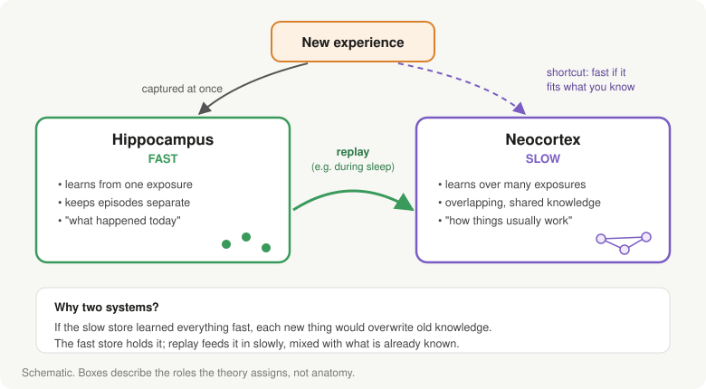
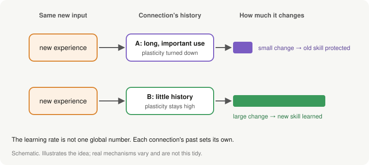
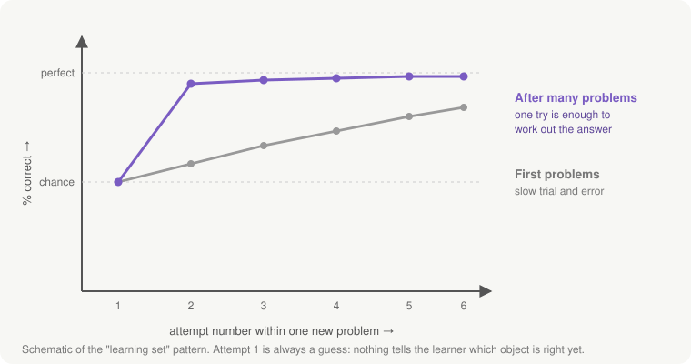
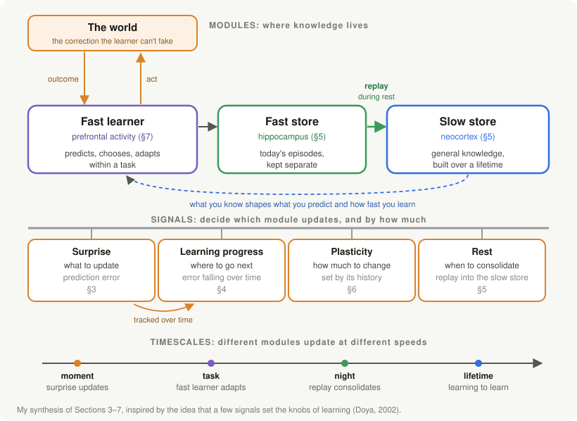

2026-10-18 · Framing
How Humans Learn: Notes Toward Self-Learning Machines
1. The question
I started this entry wanting to write about "self-evolving" AI. The deeper I read, the less sure I was what the "self" in those systems meant. The main examples I found fall into four groups:
- Self-rewarding models. A language model judges its own answers and trains on its own judgements [1].
- Self-modifying agents. The Darwin Gödel Machine rewrites its own code, scores each new version on coding benchmarks, and keeps the variants in a growing archive [2].
- Evolutionary search. AlphaEvolve has language models generate candidate programs, scores them with an automatic evaluator, and keeps evolving the best ones [3].
- Memory and skill libraries. Agents store strategies, tools or skills that worked and reuse them on later tasks [4].
The first three automate the engineer's job: generate a variant, score it, keep the winner. (My view.) That is useful, but it isn't a system that learns by itself. The fourth is closer to a learner remembering its own experience, but the memory sits outside the model and doesn't change how the model learns. (My view.)
So I'm stepping back to the one learner that clearly does: humans. This entry asks a narrow question:
How do humans learn so much, mostly without being taught each step?
I'm not trying to design an AI system here. I want a clear picture of the human side first, so that the next entry can ask what AI should borrow from it.
Why bother? Two reasons. First, today's language models mostly stop learning when training ends, and adapting them to new data without losing what they already know is still an open problem [5]. Humans do this every day. Second, systems that improve themselves without a reliable source of truth can go wrong: a 2026 risk report found that letting agents evolve through their own memory and tools made them less safe in many of the scenarios it tested [6]. Humans keep learning for decades and stay grounded, so they seem like the right place to start. (The framing is my view.)
My own reason is narrower. I want to work on self-made curricula and on models that improve their successors, and I can't do that well without knowing what "learning by itself" should mean.
2. Five problems every learner has to solve
Reading through the neuroscience, I found it easiest to organise everything around five problems. Any learner that keeps learning on its own has to deal with these five:
| Problem | Question the learner faces |
|---|---|
| 1. Signal | What did I get wrong? |
| 2. Choice | What should I try next? |
| 3. Memory | How do I keep what I learned without losing what I knew? |
| 4. Plasticity | How much should I change? |
| 5. Learning to learn | How do I get better at learning itself? |
The brain has a well-studied answer to each. None of them is "the" mechanism; they only work together. (My framing.)
Sections 3–7 take them one at a time. Section 8 then shows how they connect: not as one fixed loop, but as a few modules that different signals switch on at different times.
3. Signal: learning from surprise
The first answer is that the brain learns from the gap between what it expected and what happened.
Schultz, Dayan and Montague reviewed evidence that learning is driven by changes in expectations about future rewards and punishments, and that dopamine neurons in the primate midbrain appear to signal errors in those predictions [7]. They also showed this matches the error signal used in reinforcement learning theory [7].
The recordings make this concrete. A monkey watched for a light; when it came on, the monkey touched a lever and received a drop of fruit juice, while the researchers recorded single dopamine neurons [7]. Three cases stand out [7]:
- Juice with no warning. The neuron fires when the juice arrives: a pleasant surprise.
- Juice after the light, once the monkey has learned the pattern. The neuron fires at the light, not at the juice. The juice was fully predicted, so it carries no news.
- Light, but no juice. The neuron's activity dips at exactly the moment the juice should have come.
The intuition: a reward you fully expected teaches you nothing. Only the surprise does.

Why this matters for humans. Nobody has to label your experiences. You make a prediction, the world answers, and the gap is the lesson. This is what lets learning happen without a teacher.
One thing I want to keep. The correction comes from outside the learner. You can't decide on your own that the reward arrived. (My view: this turns out to be the most important property in the whole entry.)
4. Choice: curiosity picks the next lesson
A learner that only waits for experience to arrive learns slowly. Humans and other animals go looking.
Gottlieb and Oudeyer describe how animals actively question their environments with self-generated strategies, while lab experiments usually impose tasks from outside [8]. They separate two modes: sampling, which reduces uncertainty within a familiar task, and search, which explores open-endedly to find new tasks [8]. They argue these curiosity-driven preferences help animals cope in large environments where rewards are sparse and not known in advance [8].
What does curiosity aim for? One answer, from Oudeyer, Kaplan and Hafner, is learning progress. They built a robot that seeks situations where it improves fastest, which pushed it toward situations that were neither too predictable nor too unpredictable [9]. The robot first spent time on easy situations, then moved to harder ones, and avoided situations where nothing could be learned [9]. Its developmental stages organised themselves, with no one designing the curriculum [9].

This connects neatly back to Section 3: learning progress is just prediction error changing over time. Curiosity reads your own error curve. (My view.)
Why this matters for humans. In cognitive terms, Gureckis and Markant report that controlling your own experience lets you focus on information you don't yet have, reach information that passive observation can't, and may improve memory [10]. They also note humans are not always optimal at it [10].
5. Memory: a fast system and a slow system
Here is a problem I hadn't appreciated before reading this literature. If you learn new things quickly by changing the same connections that hold your old knowledge, the new learning overwrites the old.
Complementary learning systems theory says the brain avoids this with two memory systems that learn at different speeds [11]:
- The hippocampus learns fast. It is described as a sparse system that stores individual episodes rapidly and keeps them separate from each other [12].
- The neocortex learns slowly. It is a distributed, overlapping system that integrates across many episodes to extract general structure [12].
- Replay connects them. The hippocampus helps reinstate recent memories in the neocortex, where learning is gradual and interleaved with everything else [11].
The replay part has direct evidence. Wilson and McNaughton recorded rats' hippocampal cells during a spatial task: cells that fired together at the same location fired together more in the slow-wave sleep afterwards than in the sleep before [13]. In their words, information acquired while awake is re-expressed during sleep, as consolidation theories predict [13]. (This is in rats, and shows reactivation, not the full transfer.)

There is an important twist. Tse et al. showed that consolidation can happen very quickly if the new information fits an existing "schema", a structure of related knowledge [14]. Rats that had built up a schema of flavour–place associations learned new ones in a single trial, and those memories soon stopped depending on the hippocampus [14]. The updated theory accounts for this: neocortical learning can be fast for information that fits what is already known, and replay can weight experiences by current goals [15].
Why this matters for humans. It is how we keep learning for a whole lifetime without each new thing wiping out the last. It also means what you already know sets how fast you can learn more. (My view: this is the best argument I've seen for why foundations matter.)
6. Plasticity: how much to change
The fourth problem is quieter. Even with two memory systems, each connection still needs to decide how much to change.
The answer is that the amount a connection can change is itself learned. Abraham and Bear called this metaplasticity, "the plasticity of synaptic plasticity": a synapse's history of activity sets how plastic it is now [16]. A related hypothesis is that brains protect old knowledge by reducing the plasticity of connections that were important for earlier tasks [17].

Why this matters for humans. It lets us be stable and flexible at once: old skills stay put while new ones form. (My view: I find this the least intuitive of the five, and the one I most want to read more about.)
7. Learning to learn
The last problem: does learning itself get cheaper with experience? For primates, clearly yes. Here there is a behaviour, a proposed mechanism tested on that same behaviour, and a link back to curiosity.
The behaviour: Harlow's monkeys. Harlow gave monkeys a long series of simple choice problems between two objects, one of them rewarded, with a new pair of objects in each problem [18, 19]. On the first problems, the monkeys needed many tries of trial and error. After many problems, the first try on a new pair was still a guess, but from the second try on they were nearly always right [18, 19]. They hadn't learned the answer to any one problem. They had learned how to solve this kind of problem: if your pick was rewarded, stick with it; if not, switch. (That rule is my paraphrase, not Harlow's wording.) Harlow called this forming a learning set [18].

A mechanism: slow learning builds a fast learner. Wang et al. proposed how the brain could do this, and tested it on a version of Harlow's task [20]. In their theory, the slow, dopamine-driven learning from Section 3 gradually tunes the connections of the prefrontal cortex until its moment-to-moment activity works as a second, fast learning system [20]. They trained a network on many Harlow-style problems, with pictures in place of objects, then froze its weights. It still learned each new problem in a single trial [20]. Since the weights couldn't change, the fast learning had to be running in the network's activity, not in the slow algorithm that trained it [20]. This is a computational theory consistent with the data, not proof of how the brain does it.
So Harlow shows what learning to learn looks like; Wang et al. offer one account of how.
Where curiosity comes back in. Learning to learn is not only about solving tasks faster. It also improves how you explore, at two levels:
- Exploring within a task. In Harlow's task, the first try on a new pair is pure exploration: its only job is to find out which object pays. In Wang et al.'s model, the learned fast learner handled the trade-off between exploring and exploiting by itself; in a simpler two-option task, it tried both options before settling on the better one [20]. The exploration strategy was itself learned, not built in.
- Choosing what to learn next. Curiosity driven by learning progress (Section 4) means preferring tasks where you are improving fastest [8, 9]. To do that, a learner has to keep track of its own learning. (My view.) That is learning about your learning, which is the same territory as learning to learn.
(The two-level framing is my view.)
Why this matters for humans. Skill compounds in two ways: you learn each new thing faster, and you get better at picking what to learn. Your fifth programming language takes days, not months, partly because you know which parts to explore first. (Everyday example; my view.)
8. How it fits together
Sections 3–7 each described one piece. This section connects them.
My first instinct was a single loop: predict, choose, get corrected, store, consolidate, learn faster, repeat. But the brain doesn't run every step every time. Some pieces act every moment, some mostly during rest, some over years. So I'm borrowing the shape of an idea from Doya, who proposed that a few signals broadcast across the brain set the "knobs" of learning [21]. I'm not using his specific mapping, only the structure: a few modules hold knowledge, a few signals decide which module updates and by how much, and each runs on its own timescale. (My framing, inspired by [21].)
Every piece from Sections 3–7 turns out to be either a module or a signal:
| Piece | Section | Role | What it does |
|---|---|---|---|
| Fast learner | 7 | Module | predicts, chooses and adapts within a task [20] |
| Fast store (hippocampus) | 5 | Module | captures each new episode at once, kept separate [11, 12] |
| Slow store (neocortex) | 5 | Module | holds general knowledge, built slowly [11, 12] |
| Surprise | 3 | Signal | marks what was wrong and should change [7] |
| Learning progress | 4 | Signal | surprise tracked over time; points to where to go next [9] |
| Plasticity | 6 | Signal | sets how much each connection may change [16] |
| Rest | 5 | Signal | sets when replay moves recent episodes into the slow store [13] |

One example, start to finish. Learning to drive, as an illustration. (My example; the steps follow Sections 3–7, not a study of driving.)
- Surprise. In your first lesson you brake expecting to stop at the line and stop a metre short. The gap between what you predicted and what happened marks braking as the thing to fix (Section 3).
- The fast learner adjusts. On the next stop you brake later. Nothing slow has changed yet; you are adapting within the task (Section 7).
- The fast store keeps the episode. That evening you can still recall the stop you misjudged, though it happened only once (Section 5).
- Learning progress picks the next lesson. Empty car parks are now boring and motorways are still overwhelming, so you practise roundabouts, where your errors are falling fastest (Section 4).
- Rest triggers consolidation. Over the following nights, replay folds the day's episodes into the slow store, mixed in with everything else you know (Section 5).
- Plasticity protects what has settled. After months, steering is automatic and hard to disturb, while parallel parking is still changing. Each skill's history sets how easily it changes (Section 6).
- Learning to learn pays off. Years later you rent a car in another country and adapt in minutes, not weeks. Your slow store has a schema for driving that new details slot into quickly (Section 5), and your fast learner already knows how to explore an unfamiliar car (Section 7).
What this picture explains. (This list is my view.)
- Not everything runs all the time. A fully expected outcome produces almost no surprise (Section 3), so little changes, and replay mostly waits for rest. Modules switch on when a signal fires, not in a fixed order.
- The pieces depend on each other. Learning progress is built from surprise. Replay decides what reaches the slow store; plasticity decides how hard it lands. The slow store in turn shapes what the fast learner predicts and how quickly new things can be learned [14, 15]. Take one piece away and others suffer: without the fast store there is nothing to replay, and without surprise there is no progress to track.
- A learner can work with very few pieces. AlphaZero learned chess, shogi and Go from random play, given only the rules, by playing against itself, and beat a world-champion program in each [22]. In this picture it has one module (its network), one signal it can't fake (who won) and one timescale. Its other knobs, such as how much to explore and how fast to learn, are set by its engineers before training. (Unverified: I haven't checked the paper's exact settings.) It is the textbook self-learner, just not a lifelong one.
- The real difference is who turns the knobs. In humans, the learner's own state turns them: surprise, progress, rest. In most AI systems, an engineer sets them as fixed settings.
| What it needs | AlphaZero | Humans | |
|---|---|---|---|
| Core learning | a module that changes, a signal from something it can't fake, a way to choose its own experience | Yes, in one game | Yes |
| Lifelong learning | fast and slow stores, signals the learner sets for itself, learning to learn | No | Yes |
That gives the working definition I'll carry forward:
Self-learning is when a learner chooses its own experiences, is corrected by something it can't fake, and turns those corrections into lasting change. It becomes lifelong self-learning when it can keep doing this indefinitely, without losing what it already knows, and gets better at learning as it goes.
"Something it can't fake" is doing real work in that sentence. In AlphaZero's self-play the opponent is itself, but the rules decide who won, and it can't change them. (My view.)
9. What I'm taking from this
(This whole section is my view.)
I'll save the detail for the next entry, but three ideas already stand out.
- The correction must come from outside the learner. A system that grades its own answers can drift, because it can fake the grade. Humans can't fake whether the reward came.
- The learner must turn its own knobs. The question I'll ask of any AI system is: which signals does it set for itself, and which does an engineer set for it?
- Consolidation looks like the biggest gap in today's language models. They learn quickly in context and slowly in their weights, but nothing reliably moves what was learned in context into the weights. Adapting a trained LLM to new data without losing old knowledge is still an open problem [5].
Many of the human mechanisms already have AI versions, which is encouraging:
| Human mechanism | Existing AI idea |
|---|---|
| Hippocampal replay | Experience replay in DQN, explicitly inspired by the hippocampus [23] |
| Protecting important connections | Elastic Weight Consolidation [17] |
| Curiosity / learning progress | Automated curricula driven by learning progress [24]; LLM agents that predict their own progress [25] |
| A fast learner inside a slow one | Evidence that trained Transformers learn in context by something like gradient descent [26] |
What I haven't seen is a system that has all the modules and sets its own signals, without an engineer turning the knobs. That is the question for the next entry.
10. Where this could matter
For humans.
- Personalised teaching. Clement et al. built a tutoring system that picks each child's next exercise by that child's learning progress, the curiosity signal from Section 4 [27]. In a study with 400 schoolchildren aged 7–8, more children reached the harder levels than with a sequence designed by experts [27].
- How I study. Work at the edge of what I can do, rest between sessions, and expect the first few problems in any new area to be slow. (My view, drawn from Sections 4, 5 and 7.)
For AI. (Most rows are speculative; the evidence column says what exists today.)
| Use case | What exists today | What it would need |
|---|---|---|
| Models that stay current after training | Adapting without forgetting is still unsolved [5] | A fast store plus consolidation (Section 5) (Speculative.) |
| Assistants that learn one person over months | Memory libraries that sit outside the model [4] | Consolidation, with old knowledge protected (Sections 5–6) (Speculative.) |
| Robots in new places | A curiosity-driven robot organised its own developmental stages [9] | Learning progress (Section 4) |
| Research agents | The AI Scientist automates a full research pipeline, and one of its papers passed peer review at a workshop [28] | Learning across projects, not just within one (Section 7) (My view.) |
| Learning from very little data | Humans solve a new problem after one try once they have a learning set (Section 7) | A fast learner built by slow learning [20] (Speculative.) |
Every row comes with the risk from Section 1: a system that changes itself needs a correction it can't fake [6]. (My view.)
11. What I left out, and open questions
Left out on purpose.
- Learning from other humans (imitation, teaching). I'm treating other humans as part of the environment that corrects the learner, not as a separate mechanism. (My view.)
- Development. How learning changes from childhood to adulthood.
- Emotion, attention and sleep in detail. Each deserves its own entry.
Open questions.
- Is "can't fake" too strict? Some AI systems use a separate judge model that is hard, but not impossible, to fool. Where is the line?
- Is a fast store actually needed, or could a very long context with periodic consolidation do the same job? (Speculative.)
- Can a system consolidate its own experience into its weights safely, without drifting away from what it was meant to do?
12. Next
Take the modules, signals and definition, and test current AI systems against them, one step at a time: which steps each system does itself, and which an engineer still does. Then look at self-made curricula and models improving their successors through this lens.
References
- Yuan W, Pang RY, Cho K, et al. Self-Rewarding Language Models. ICML 2024. arXiv:2401.10020
- Zhang J, Hu S, Lu C, Lange R, Clune J. Darwin Gödel Machine: Open-Ended Evolution of Self-Improving Agents. ICLR 2026. arXiv:2505.22954
- Google DeepMind's new AI agent cracks real-world problems better than humans can. MIT Technology Review, 14 May 2025. link
- A Survey of Self-Evolving Agents: What, When, How, and Where to Evolve on the Path to Artificial Super Intelligence. TMLR 2026. arXiv:2507.21046
- Shi H, Xu Z, Wang H, et al. Continual Learning of Large Language Models: A Comprehensive Survey. 2024. arXiv:2404.16789
- Frontier AI Risk Management Framework in Practice: A Risk Analysis Technical Report v1.5. 2026. arXiv:2602.14457
- Schultz W, Dayan P, Montague PR. A Neural Substrate of Prediction and Reward. Science 275(5306):1593–1599, 1997. PMID 9054347. link
- Gottlieb J, Oudeyer P-Y. Towards a neuroscience of active sampling and curiosity. Nature Reviews Neuroscience, 2018. doi.org/10.1038/s41583-018-0078-0
- Oudeyer P-Y, Kaplan F, Hafner VV. Intrinsic Motivation Systems for Autonomous Mental Development. IEEE Transactions on Evolutionary Computation 11(2), 2007. infoscience.epfl.ch/record/115468
- Gureckis TM, Markant DB. Self-Directed Learning: A Cognitive and Computational Perspective. Perspectives on Psychological Science 7(5):464–481, 2012. link
- McClelland JL, McNaughton BL, O'Reilly RC. Why there are complementary learning systems in the hippocampus and neocortex. Psychological Review 102(3):419–457, 1995. doi.org/10.1037/0033-295X.102.3.419
- O'Reilly RC, Bhattacharyya R, Howard MD, Ketz N. Complementary Learning Systems. Cognitive Science, 2011. link
- Wilson MA, McNaughton BL. Reactivation of hippocampal ensemble memories during sleep. Science 265(5172):676–679, 1994. doi.org/10.1126/science.8036517
- Tse D, Langston RF, Kakeyama M, et al. Schemas and memory consolidation. Science 316(5821):76–82, 2007. doi.org/10.1126/science.1135935
- Kumaran D, Hassabis D, McClelland JL. What Learning Systems do Intelligent Agents Need? Complementary Learning Systems Theory Updated. Trends in Cognitive Sciences 20(7):512–534, 2016. doi.org/10.1016/j.tics.2016.05.004
- Abraham WC, Bear MF. Metaplasticity: the plasticity of synaptic plasticity. Trends in Neurosciences 19(4):126–130, 1996. PMID 8658594. link
- Kirkpatrick J, Pascanu R, Rabinowitz N, et al. Overcoming catastrophic forgetting in neural networks. PNAS 114(13):3521–3526, 2017. doi.org/10.1073/pnas.1611835114
- Harlow HF. The formation of learning sets. Psychological Review 56(1):51–65, 1949.
- Medin DL. Role of reinforcement in discrimination learning set in monkeys. Psychological Bulletin 77(5), 1972. link
- Wang JX, Kurth-Nelson Z, Kumaran D, et al. Prefrontal cortex as a meta-reinforcement learning system. Nature Neuroscience 21, 2018. doi.org/10.1038/s41593-018-0147-8
- Doya K. Metalearning and neuromodulation. Neural Networks 15(4–6):495–506, 2002. doi.org/10.1016/S0893-6080(02)00044-8
- Silver D, Hubert T, Schrittwieser J, et al. A general reinforcement learning algorithm that masters chess, shogi, and Go through self-play. Science 362(6419):1140–1144, 2018. doi.org/10.1126/science.aar6404
- Mnih V, Kavukcuoglu K, Silver D, et al. Human-level control through deep reinforcement learning. Nature, 2015. doi.org/10.1038/nature14236
- Graves A, Bellemare MG, Menick J, Munos R, Kavukcuoglu K. Automated Curriculum Learning for Neural Networks. ICML 2017. arXiv:1704.03003
- Gaven L, et al. MAGELLAN: Metacognitive predictions of learning progress guide autotelic LLM agents in large goal spaces. ICML 2025. arXiv:2502.07709
- von Oswald J, Niklasson E, Randazzo E, et al. Transformers learn in-context by gradient descent. ICML 2023. arXiv:2212.07677
- Clement B, Roy D, Oudeyer P-Y, Lopes M. Multi-Armed Bandits for Intelligent Tutoring Systems. Journal of Educational Data Mining 7(2):20–48, 2015. arXiv:1310.3174
- Lu C, et al. Towards end-to-end automation of AI research. Nature 651, 2026. www.cs.ubc.ca/news/2026/03/ai-scientist